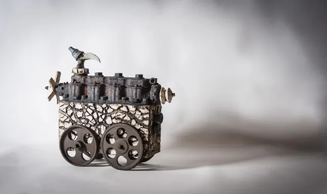
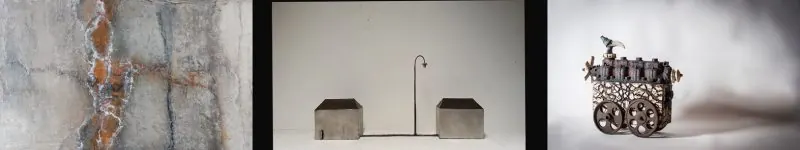

Nieuws ·
Expo drie éénheid kerkje van Persingen 30, 31 maart en 1 april

In het paasweekend van 30, 31 maart en 1 april 2024 vindt er in het kerkje van Persingen een bijzondere expositie plaats. Getiteld: “Drie éénheid”
3 kunstenaars met 3 verschillende disciplines Materie schilderijen, ijzeren objecten en keramiek objecten. Samen vormen deze werken een drie éénheid en vullen elkaar wonderbaarlijk aan.

Liesbet Optendrees: Alles wat ik achter laat zijn mijn voetstappen. Zoektocht naar de overeenkomst tussen mens en aarde. De structuur moet kloppen met het gevoel wat het moet oproepen. De structuur van een werk is altijd functioneel en nooit op willekeurige wijze tot stand gekomen. De materialen papier, as soorten, zand, roestpoeders, natuurlijke pigmenten e.d. worden vaak door mijzelf gemaakt, verzameld of meegenomen van reizen. Ook wordt gebruik gemaakt van restmateriaal, zoals oud ijzer, zaagsel, houtsnippers, katoen. De pigmenten en/of acrylverf worden in vele (dunne) lagen opgebracht, er wordt geveegd, gekrast, gepoetst, gekerfd. Er wordt gebruik gemaakt van abstracte symbolische vormen.
Sophia de Vries: Ik zet mijn herinneringen en ervaringen om in stalen objecten. Ik las en smeed ze, sla ze in vorm, slijp en schuur ze, tot er een object ontstaat dat mijn verhaal, mijn herinnering vormgeeft. Staal biedt mij de mogelijkheid deze vorm te geven. Door de ambachtelijke manier van werken met dit materiaal voeg ik een extra gelaagdheid aan dit werk. Je ziet aan de beelden dat het kracht heeft gekost, dat het met zweet en soms met bruut geweld tot stand vorm is gegeven en afgemaakt is met liefde, tederheid en aandacht. Zo ontstaan vaak sobere en eenvoudige beelden die ondanks hun stoere materiaal en krachtige wijze van maken, fragiel en teder zijn passend bij mijn Groningse afkomst.
Harm van der Zeeuw: De opvallende Keramische objecten van Harm van der Zeeuw kenmerken zich door anachronistische elementen; moderne elementen worden gebruikt in objecten die eruit zien alsof zij eeuwen geleden in een primitieve werkplaats tijdens een mysterieuze beschaving zijn gemaakt. Het bewerkstelligt een komisch effect dat nog eens versterkt wordt door de fantasierijke, humoristische voorstelling van de objecten. Tijd, leven en beweging zijn Harms thema’s die door technische innovatie tijdens het maakproces, bekrachtigd worden. De fantastische werken, humorvol met een uitstraling van onverwoestbare en mystieke oerkracht, de open structuren en warme kleuren maken dat Harm zeer herkenbare, unieke voorstellingen internationaal zeer geliefd zijn. En wat steeds weer verbaast, is wat op ijzer lijkt toch echt keramiek.
Opening tijden van de expositie in het kerkje van persingen.
Zaterdag 30 maart van 12.00 tot 17.00 uur
Zondag 31 maart van 11.00 tot 17.00 uur
Maandag 1 april van 11.00 tot 17.00 uur
Adres: Persingensestraat 7, 6575 JA Persingen